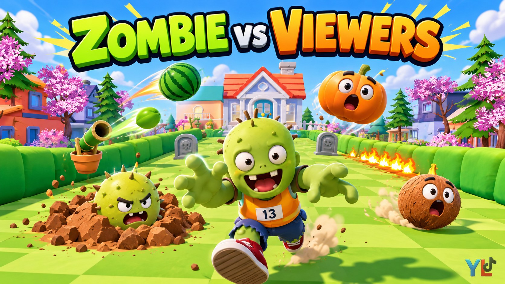
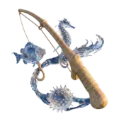

รองเท้าเร็ว
วิ่งเร็วขึ้น 3 วิ
ใช้ตอนต้องรีบผ่านช่วงที่มีของแกล้งเยอะ
เลข = จำนวน ครั้งละ 3 วิ

รายการคำสั่งทั้งหมดที่เกมรับ ใช้กับ YLTick เท่านั้น · ผูกของขวัญกับคำสั่งเองได้ตามใจ ราคาเท่าไหร่ก็ได้ เกมอ่านแค่ข้อความคำสั่ง
mine 5 (ตัวเลขต่อท้ายไม่ใส่ก็ได้ = 1)วิ่งเร็วขึ้น 3 วิ
ใช้ตอนต้องรีบผ่านช่วงที่มีของแกล้งเยอะ
เลข = จำนวน ครั้งละ 3 วิ
พาลอยข้ามของแกล้งที่กำลังจะโดน 1 ชิ้น
ใช้เองอัตโนมัติ ลูกโป่งผูกมือซ้าย ไม่เสียอย่างอื่น
เลข = จำนวนครั้ง
กันของแกล้งได้ 3 ครั้งแล้วหลุด
ใช้เองอัตโนมัติ (ลูกโป่งกับประตูถูกใช้ก่อน)
เลข = จำนวน ใบละ 3 ที
ถือประตูบังหน้า บานละรับของเบาได้ 3 ที ระเบิดกิน 1.5
ชิ้นประตูหลุดให้เห็นว่ารับได้อีกกี่ที สะสมได้ 10 บาน เดินช้าลงนิดหน่อย
เลข = จำนวนบาน
พรีเซ็ต น้ำหอม 20 เพชร
กระโดดค้ำไม้ข้ามของแกล้งข้างหน้า
กด Space: ขึ้นไปจับยอดไม้ โยกทรงตัว แล้วตกลงไปข้างหน้า ชิ้นละ 2 ครั้ง
เลข = จำนวน
พรีเซ็ต

คันเบ็ดไม้ 100 เพชรประตูบ้านเปิดเอง ไม่ต้องเคาะ
เดินเข้าบ้านได้เลย
เลข = จำนวนรอบ
พรีเซ็ต ประตูสู่สมบัติ 100 เพชร
สมอง +n หรือ −n ทันที (ตั้งเองตามของขวัญ)
brain 5 = +5 · brain -3 = −3
สเก็ตบอร์ด วิ่งเร็วขึ้นเกือบ 2 เท่า 4 วิ
เลข = จำนวน (ครั้งละ 4 วิ ซ้อนได้)
เจ็ทแพ็คบินลอย ข้ามระเบิด กล้วย หมา ไฟ ของบนพื้นทั้งหมด
กระสุนยังโดนได้
เลข = จำนวน (ครั้งละ 3 วิ ซ้อนได้ เช่น 4 = 12 วิ)
ฟองสบู่ครอบตัว กันได้ทุกทิศ ทุกอย่าง ลูกละ 2 ที
เลข = จำนวนลูก (สูงสุด 5)
สปริงโผล่ใต้เท้า เด้งลอยไปข้างหน้า 3 ม.
เลข = จำนวนครั้ง
ไผ่ปืนใหญ่โผล่ข้างสนาม ยิงดักทางทุก 2 วิ
ยิงได้แค่ข้างหน้าเฉียงนิดหน่อย เดินผ่านไปแล้วยิงไม่ได้ · หลบหลังหลุมศพได้
เลข = วินาที (ไม่ใส่ = 5)
พรีเซ็ต  GG 1 เพชร
GG 1 เพชร
หน่อไม้ปืนกล ยิงชุดละ 3 นัด
เหมือนไผ่ปืน แต่รัวกว่า
เลข = วินาที (ไม่ใส่ = 5)
พรีเซ็ต ไดโนเสาร์จิ๋ว 10 เพชร
เครื่องดีดแตงโมโค้งดักทาง
ข้ามหลุมศพได้ แอบก็ยังโดน · เปลี่ยนทิศเดินให้แตงโมตกพลาด
เลข = วินาที (ไม่ใส่ = 5)
ไผ่ปืนน้ำแข็ง โดนแล้วช้าลง 1.2 วิ
ยิงดักทางเหมือนไผ่ปืน มีเกล็ดน้ำแข็งเกาะตัว
เลข = วินาที (ไม่ใส่ = 5)
พรีเซ็ต ไอศกรีมแท่ง 10 เพชร
ระเบิดหนามลูกเล็กฝังจมดินทั่วสวน อยู่จนกว่าจะเหยียบ · พร้อมเมื่อไหร่กระพริบแดง ชนวนมีประกาย
มองหาหลุมดิน/ลูกหนาม แล้วเดินอ้อม
เลข = จำนวนลูก (x500 ได้ เต็มสวน)
พรีเซ็ต  หัวใจนิ้ว 5 เพชร
หัวใจนิ้ว 5 เพชร
ฟักทองรอในสวน เข้าใกล้แล้วโดดขึ้น เล็งตามกลางอากาศ แล้วกระแทกลงเร็ว
เดินหลบไม่ทันแล้ว · ค้ำไม้ข้าม หรือมีลูกโป่ง/หมวกกันได้
เลข = จำนวน
พรีเซ็ต  โดนัท 30 เพชร
โดนัท 30 เพชร
มะพร้าวกลิ้งออกจากประตูบ้าน ลูกเล็ก/ใหญ่สุ่ม หน้าหมุนตามลูก
ชนแล้วกระเด็น · หลบซ้ายขวา หรือค้ำไม้ข้าม
เลข = จำนวนลูก (มาเป็นฝูง)
พรีเซ็ต ฟุตบอลหมุน 5 เพชร · กดติดตาม · ไลก์ครบ 100
หม้อแกงลิงยืดตัวงับจากระยะ 1.8 ม. เคี้ยว แล้วพ่นขึ้นฟ้าเหมือนจรวด ตกไกลไปข้างหลัง
อยู่ค้างในสวน · เดินอ้อมห่างๆ เกิน 2 ม.
เลข = จำนวน
ทุเรียนเหลืองโผล่ข้างตัว รอยแตกเรืองส้ม ชนวนไหม้ แล้วระเบิดลูกใหญ่
นับถอยหลังแป๊บเดียว รีบเดินหนี
เลข = จำนวน
ไฟพริกลุกเป็นแนวขวางสนาม จอสั่น ยิ่งหลายลูกพร้อมกันยิ่งแรง
x3 = ไฟ 3 แนวดักหน้า-หลัง · หยุดรอให้ไฟดับก่อน
เลข = จำนวน (x3 = ไฟ 3 แนว)
คัทซีนเห็ดดำ: บึ้มทั้งแมพ ตายทันที สมอง −1
กันไม่ได้ทุกกรณี
เลข = จำนวนครั้ง (สูงสุด 5)
พรีเซ็ต เห็ดร้องเพลง 99 เพชร
สปริงเกอร์ดอกไม้ พื้นรอบๆ เปียก เดินเข้าไปแล้วลื่นล้ม ไถลไปทิศสุ่ม
อ้อมวงน้ำ · ล้มแล้วมันหายไปเอง
เลข = จำนวน
รถตัดหญ้าวิ่งออกจากประตูบ้าน ชนแล้วกระเด็น
หลบซ้ายขวา
เลข = จำนวนคัน
เปลือกกล้วย 4 ชิ้นโปรยตามทาง เหยียบแล้วลื่นล้ม
ก้าวข้าม · เจ็ทแพ็คบินข้ามได้
เลข = จำนวน (ชุดละ 4 ชิ้น)
บ้านหมาโผล่หลังสวน หมาวิ่งออกมาวิ่งมั่ว เห็นแล้วงับขาลากถอยหลัง
หนีให้ห่าง 3.5 ม. · บ้านหมาอยู่ทั้งรอบ
เลข = จำนวนหมา
พรีเซ็ต อุ้งเท้าสีน้ำตาล 5 เพชร → dog 3
เมฆลอยตามหัว วงเหลืองขึ้นตรงที่ยืน แล้วฟ้าผ่าลงจุดนั้น
เห็นวงแล้วเดินออก 1 ก้าว
เลข = จำนวนรอบที่ผ่า (สูงสุด 10)